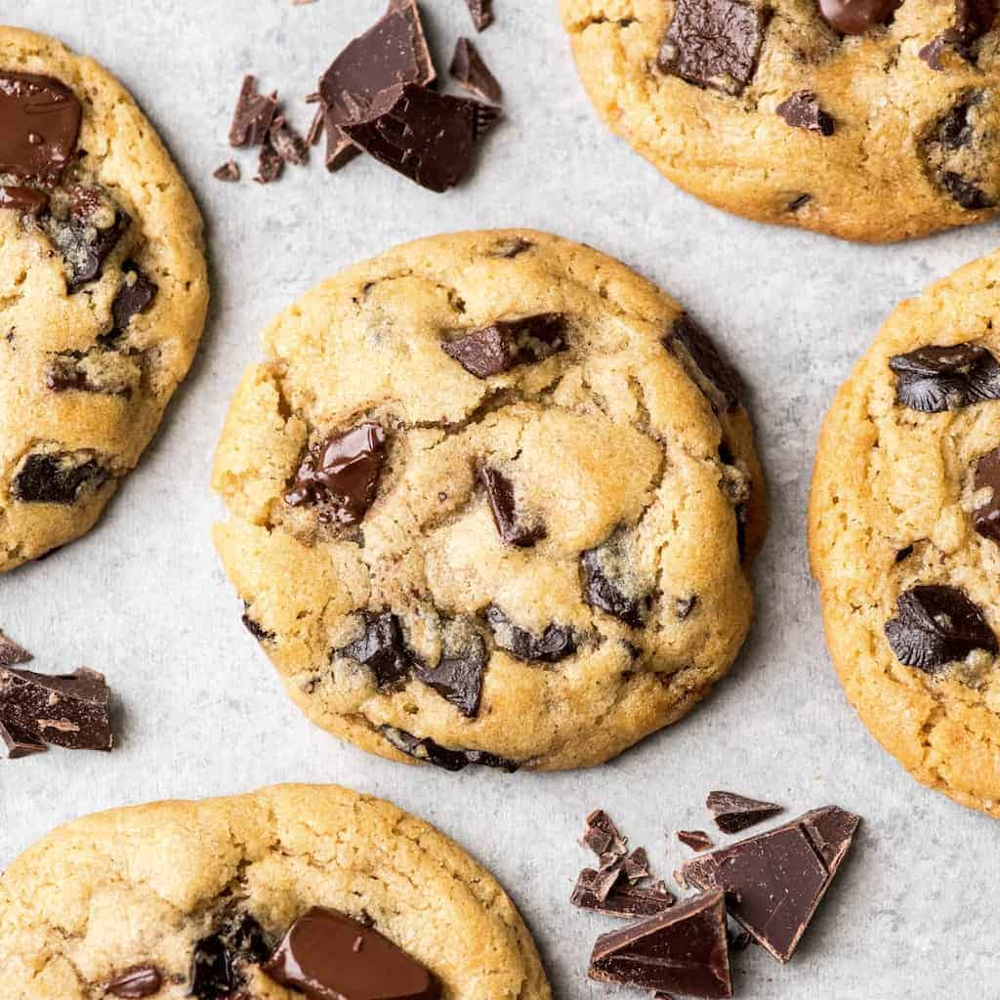

Cookies

Description
This is quite simply a cookie recipe that will destroy all other chocolate chip cookies for you. A soft gooey center and a little crunch around the edges....oh yes. Follow the recipe precisely and you shan't be disappointed.
Ingredients
- 250g butter
- 200g light brown sugar
- 150g granulated white sugar
- 2 egg
- 2 tsp vanilla
- 600g plain flour
- 3 tsp baking powder
- 1 tsp bicarbonate of soda
- 1 tsp salt
- 200g milk chocolate chips
- 100g white chocolate chips
Steps
- Beat together butter and sugars until fluffy.
- Add eggs one at a time and mix well between each.
- Add vanilla and mix to combine.
- Add all dry ingredients and mix until combined.
- Add all chocolate chips and mix until evenly distributed.
- Line 2 trays with baking paper and place 60-80g balls of cookie dough on the tray until you have used all the dough.
- Slightly squash the cookie dough balls and place the trays in the freezer to freeze the dough.
- To cook: Heat oven to 180 degrees or gas mark 4/5. Place cookies far apart on tray and bake for 15 mins.
- Cookies will be very soft when removed from the oven. Allow to cool on tray for at least 5 minutes. The cookies will finish cooking during this time.
- Eat cookies until you are a circle.